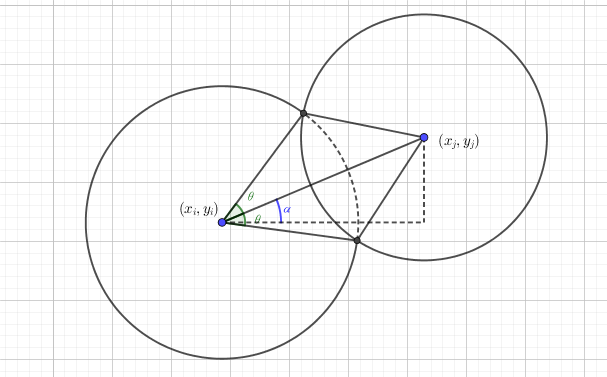

有 $n$ 个圆盘从天而降，后面落下的可以盖住前面的，求最后形成的封闭区域的周长。
如下图，所有的红色线条的总长度即为所求。

第一行包含一个正整数 $n$ ($n \leq 1000$)，表示圆盘的个数。
接下来 $n$ 行每行包含三个实数 $r_i, x_i, y_i$ 表示下落时第 $i$ 个圆盘的半径和圆心坐标。
输出一行一个实数，表示最后的周长，保留三位小数。
易知，对于第 $i$ 个圆，只有后面的圆 ($i < j \leq n$) 才能对这个圆造成影响。
由于这个周长包含内部，因此考虑分别求每个圆对总周长的贡献。当然，考虑某个圆周长的贡献时，只考虑它后面的圆的影响。
考虑圆 $i$ 和圆 $j$ ($i < j \leq n$)，如果这两个圆相离，则 $j$ 未对 $i$ 造成影响。如果 $j$ 包含 $i$，则换句话说，即 $i$ 这个圆被覆盖，于是 $i$ 就不对答案产生任何贡献，直接 break;。如果 $i$ 包含 $j$，同样，$j$ 也不对 $i$ 造成影响。
接下来讨论 $i$ 和 $j$ 相交，设 $i$ 的圆心坐标为 $(x_i, y_i)$，半径为 $r_i$，$j$ 的类似，见下图：
可以发现，圆 $i$ 有 $2 \theta \left( \mathrm{rad}\right )$ 的部分 (虚线) 被圆 $j$ 覆盖。
(scx: 那这个 $\theta$ 值怎么求呢？)
我们可以发现，两个圆心与其中一个交点构成了一个三角形，三边分别为 $r_i, r_j$ 和 $\sqrt {(x_i - x_j)^2 + (y_i - y_j)^2}$，于是可以利用余弦定理的逆定理反求出 $\theta$ 的值。
但是，仅仅知道 $\theta$ 是不够的，因为你无法知道 $i$ 被两个圆 (如 $j_1, j_2$) 覆盖的部分有多少是相交的，因此还需要记录它们的相交部分的一个绝对位置，比如极角如上图中的 $\alpha$，显然可以通过它们的坐标和 $\arctan$ 函数求得。
最后，我们就得到了圆 $i$ 所有被覆盖的部分，接下来就要求它未被覆盖的部分的弧度总和。
在 $\theta = 0$ 处破环为链，可以看出这是个弱智的线段覆盖问题。
显然可以用贪心，将每个覆盖线段按照左端点 $[l_i, r_i]$ 排序，如果遇到左端点 $l_i > now$ 的，加上一个区间，然后令 $now \gets r_i$，否则令 $now \gets \max \{now, r_i\}$。
最后由弧长公式 $l = \alpha \cdot r$，相加即得结果，时间复杂度 $O \left( n^2 + n f(n) \right)$，其中 $f(n)$ 为排序复杂度。
#include <bits/stdc++.h>
#define N 1034
using namespace std;
const double eps = 1e-8, pi2 = M_PI * 2.0;
enum relation {outside = 0, intersective = 1, contained = 2, containing = 3};
struct vec2{
double x, y;
vec2 (double x0 = 0.0, double y0 = 0.0): x(x0), y(y0) {}
vec2 * read() {scanf("%lf%lf", &x, &y); return this;}
// inline vec2 operator + (const vec2 &B) const {return vec2(x + B.x, y + B.y);}
inline vec2 operator - (const vec2 &B) const {return vec2(x - B.x, y - B.y);}
// inline vec2 operator * (double k) const {return vec2(x * k, y * k);}
inline double operator * (const vec2 &B) const {return x * B.x + y * B.y;}
// inline double operator ^ (const vec2 &B) const {return x * B.y - y * B.x;}
inline double norm2() const {return *this * *this;}
bool operator < (const vec2 &B) const {return x < B.x;}
}O[N], l[N << 1];
int n, i, j, cnt;
double r[N], il, ir, ans;
relation rel[N];
relation circle_relation(vec2 O1, double r1, vec2 O2, double r2){
double d = (O1 - O2).norm2();
if((r1 + r2) * (r1 + r2) < d + eps) return outside;
if((r1 - r2) * (r1 - r2) > d - eps) return r1 < r2 + eps ? contained : containing;
return intersective;
}
void get_intersection(vec2 O1, double r1, vec2 O2, double r2, double &beg, double &end){
vec2 O12 = O2 - O1;
double d2 = O12.norm2(), d = sqrt(d2),
Cos = ((r1 + r2) * (r1 - r2) + d2) / (2.0 * d * r1),
sAng = acos(Cos), iAng = atan2(O12.y, O12.x);
iAng < 0.0 ? iAng += pi2 : 0.0;
(beg = iAng - sAng) < 0.0 ? beg += pi2 : 0.0;
(end = iAng + sAng) > pi2 ? end -= pi2 : 0.0;
}
int main(){
scanf("%d", &n);
for(i = 1; i <= n; ++i) {scanf("%lf", r + i); O[i].read();}
ans = 0.0;
for(i = 1; i <= n; ++i){
for(j = i + 1; j <= n; ++j)
if((rel[j] = circle_relation(O[i], r[i], O[j], r[j])) == contained)
break; // contained in another circle
if(j <= n) continue;
cnt = 0;
for(j = i + 1; j <= n; ++j)
if(rel[j] == intersective){
get_intersection(O[i], r[i], O[j], r[j], il, ir);
if(il < ir + eps)
l[cnt++] = vec2(il, ir);
else{
l[cnt++] = vec2(0, ir);
l[cnt++] = vec2(il, pi2);
}
}
l[cnt++] = vec2(pi2, pi2);
sort(l, l + cnt);
il = ir = 0.0;
for(j = 0; j < cnt; ++j)
if(il < l[j].x){
ir += l[j].x - il;
il = l[j].y;
}else if(il < l[j].y)
il = l[j].y;
ans += ir * r[i];
}
printf("%.3lf\n", ans);
return 0;
}
坑1：注意 atan2() 函数的返回值值域为 $[-\pi, \pi]$，因此需要手动转为 $[0, 2 \pi]$ 再处理，避免产生负数导致排序时废掉。(当然把所有变量转移到 $[-\pi, \pi]$ 也是可以滴)